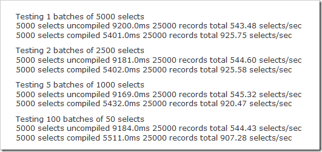
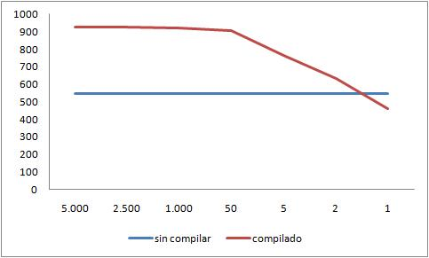

1 de 5.000 ó 5.000 de 1 (batch y transaccional)
Es fácil engañarse cuando se intenta optimizar, lo que parece lógico, y hasta numéricamente plausible puede estallarnos en la cara cuando lo analizamos en detalle, especialmente cuando lo ponemos a prueba en la práctica.
Es típico que algún experto nos aconseje sobre usar determinada técnica, porque en teoría es más óptima. Los novatos tienden a aplicar estas propuestas sin cuestionarlas mucho. Los más viejos tendemos a confiar en la experiencia, y esta suele darnos la razón.
Es lo que le pasó a Jeff Attwood, quien en un muy brillante post demuestra que el experto no tenía razón, y que lo que la práctica le decía tenía un fundamento, después de todo. Y el problema que explica Attwood es interesante, porque me he topado con el mismo varias veces, incluso recientemente.
La cosa es más o menos así, de acuerdo a un experto, citado por Attwood
“SI estás construyendo aplicaciones web ASP.NET, que van a tener miles de hits por segudo, la sobrecarga de ejecución de las consultas Linq van a consumir demasiada CPU y harán tu sitio web lento. Hay un costo en momento de ejecución asociado con con cada una de las consultas Linq que escribes. Las consultas son analizadas y convertidas a una sentencia SQL en cada hit. Esto no es hecho en tiempo de compilación, porque no hay manera de saber que puedes enviar en los parámetros a las consultas durante la ejecución.”
Aunque Jeff Attwood está hablando de Linq y ASP.Net, el problema puede extrapolarse a otros ambientes, como PHP, o Java, en que tenemos consultas (queries) que se interpretan en tiempo de ejecución.
El mecanismo de Linq es bien elegante, y en mi opinión, más poderoso que otros ORM. En el caso particular que expone el autor se tiene una consulta en Linq más o menos así
var query = from widget in dc.Widgets
where widget.ID == id && widget.PageID == pageId
select widget;
var widget = query.SingleOrDefault();
El experto afirma que estuvo analizando el problema de este tipo de ejecuciones y descubrió que la ejecución de este tipo de sentencias hace palidecer al tiempo que se gasta en el roundtrip a la base de datos!!
Es decir, al parecer, se gasta más tiempo analizando estas sentencias Linq que en la ejecución del código resultante en la base de datos. Por lo tanto, lo que hay que hacer, nos recomienda, es compilar estos queries, antes de ejecutarlas (algo que complejiza bastante el código, y hace de la mantención del mismo una tarea más ardua).
Se pueden imaginar la cara que puso Jeff Attwood cuando leyó estas afirmaciones:

Porque simplemente no lo podía creer. De hecho, el sitio Stack Overflow, con sobre 1.6 millones de page views al día, tiene muchas lineas de código que dependen de sentencias Linq como las cuestionadas por Omar Al Zabir, el experto MVP, autor de libros sobre el tema.
Y para darle más peso a su argumento, Omar Al Zabir muestra los datos de Rico Mariani, un ingeniero de Microsoft, quien condujo una serie de experimentos en que probaban el desempeño de sentencias Linq compiladas versus las no compiladas.
Esta es la tabla que Al Zabir muestra, extraida del artículo con los expermientos de Rico Mariani:

Pero hay una trampita.
Para entender porque las afirmaciones de Omar Al Zabir no cuadran con la experiencia de Attwood, hay que entender como se hicieron las pruebas, y así podemos ver que Al Zabir comete un grave error, generalizando una solución, que es altamente dependiente del tipo de operación que vamos a realizar.
Rico Mariani nos explica que para comparar los dos tipos de consultas el ejecutó básicamente estos dos test:
Para el caso de las queries pre compiladas:
start timer
for (j=0;j\<batches;j++)
compile query
for (i=0;i\<runs;i++)
create new data context
run query in new context
stop timer
print number of selects and time etc.
Para el caso de las consultas interpretadas (no pre compiladas):
start timer
for (j=0;j\<batches;j++)
for (i=0;i\<runs;i++)
create new data context
run query in new context
stop timer
print number of selects and time etc.
Y lo que hace Rico Mariani es ir jugando con la cantidad de ejecuciones, y el tamaño del proceso batch, lo que genera una tabla de resultados mucho más larga, y que tiene al final de la misma unos resultados que son ignorados por Al Zabir (no sabemos si intencionalmente). Estos resultados ignorados por el “experto” son:
Testing 2500 batches of 2 selects 5000 selects uncompiled 9165.0ms 25000 records total 545.55 selects/sec
5000 selects compiled 7892.0ms 25000 records total 633.55 selects/sec
Testing 5000 batches of 1 selects
5000 selects uncompiled 9157.0ms 25000 records total 546.03 selects/sec5000 selects compiled 10825.0ms 25000 records total 461.89 selects/sec
Seguramente se han mareado a estas alturas, pero se los voy a resumir:
Al partir el experimento, se prueba con 1 lote de 5.000 selects. En el caso compilado se logran 925 selects/segundo, y sin compilar 543 selects por segundo. Ganador la versión compilada.
Al final del experimento, se pruena con 5.000 lotes con 1 select. En el caso compilado se logran 461 selects/segundo y sin compilar se logran 546 selects/ segundo.
De hecho si graficamos el tamaño del lote versus el desempeño en selects/segundo, queda claro lo que pasa:

¿Qué siginifica esto?
Resulta que nos encontramos ante los dos extremos de aplicaciones posibles, la aplicación de Attwood es una aplicación web, fuertemente transaccional, es decir, está en el extremo de los 5.000 lotes de tamaño 1. Por otro lado, las recomendaciones de Omar Al Zabir son útiles cuando el tamaño del lote es grande (lotes de 5.000 o más selects). Las recomendaciones de Al Zabir son muy útiles cuando estamos ante aplicaciones batch, offline, no transaccionales.
Ese es el caso particular de las aplicaciones con las que tengo que lidiar en mi trabajo, aplicaciones batch, con procesamiento de miles o millones de registros, es todo lo contrario de las aplicaciones transaccionales web. En mi caso los consejos de Al Zabir podrían tener aplicación (si usara Linq).
¿Es esto aplicable a la discusión del uso de los lenguajes compilados, versus los lenguajes interpretados? ¿O a otras aplicaciones? ¿como el uso de un ORM, versus llamadas directas a la base de datos usando JDBC, por ejemplo? Sospecho que sí, pero es una afirmación que, como siempre, requiere ser demostrada, y para eso hay que mostrar el código.
Referencias: